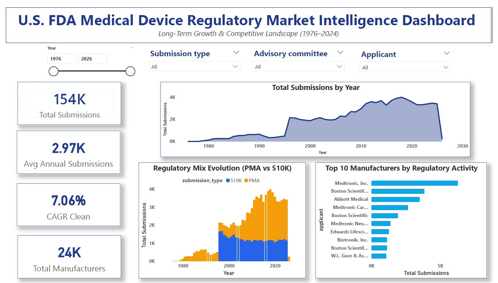
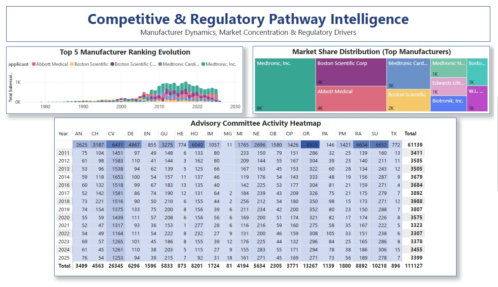
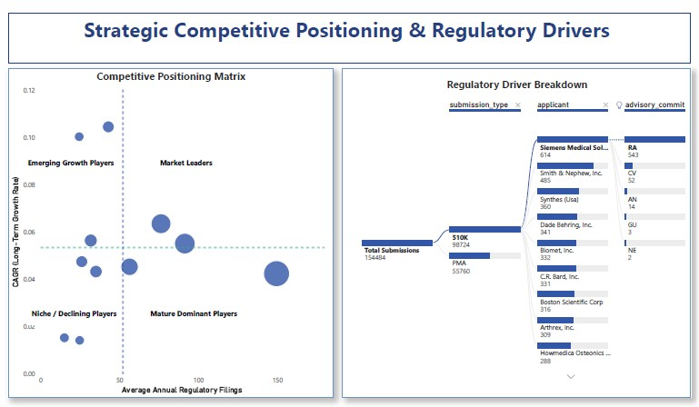

This project presents an end-to-end analytical study of U.S. FDA medical device submissions using publicly available 510(k) and PMA datasets (1976–2024). The objective was to transform historical regulatory filing data into structured market intelligence insights through dimensional modeling, DAX-based metrics, and strategic visualization in Power BI.
Rather than focusing on compliance reporting, this analysis interprets regulatory throughput as a proxy for innovation density, competitive positioning, and therapeutic segment evolution.
Source:
Time Range: 1976–2024
Data was extracted, cleaned, and transformed into a star-schema model with:
1️⃣ Structural Market Expansion
Regulatory filings demonstrate sustained long-term growth with a CAGR of approximately [Insert CAGR%], reflecting structural innovation momentum rather than cyclical fluctuation.
2️⃣ 510(k) Pathway Dominance
Approximately [Insert %] of total submissions occur through the 510(k) pathway, confirming incremental, predicate-based innovation as the dominant commercialization strategy. PMA submissions represent high-risk and breakthrough device segments.
3️⃣ Competitive Concentration
Top manufacturers such as Medtronic, Boston Scientific, and Abbott consistently lead in regulatory throughput. The Top 10 manufacturers account for ~[Insert %] of total filings, indicating meaningful competitive concentration.
4️⃣ Competitive Positioning Segmentation
By mapping manufacturers across:
Four strategic segments emerge:
This framework converts regulatory activity into competitive intelligence.
5️⃣ Advisory Committee Hotspots
Submission clustering across advisory committees highlights therapeutic domains with high innovation density, particularly within cardiovascular, orthopedic, and radiological device categories.
Regulatory datasets are often viewed as compliance records.
However, when modeled longitudinally and analyzed dimensionally, they reveal:
This project demonstrates how domain expertise in regulatory affairs can be integrated with analytical modeling and visualization to generate structured market intelligence.



Download Power BI File